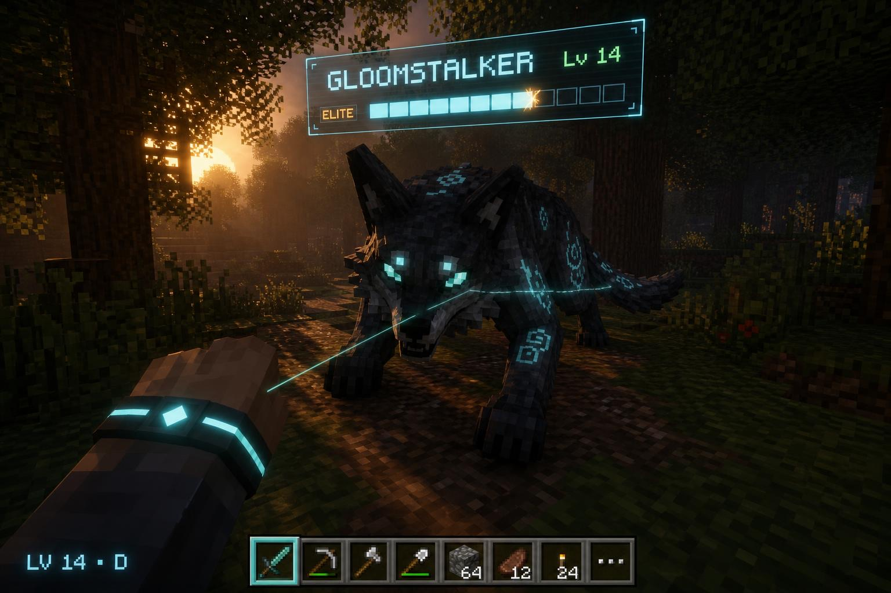
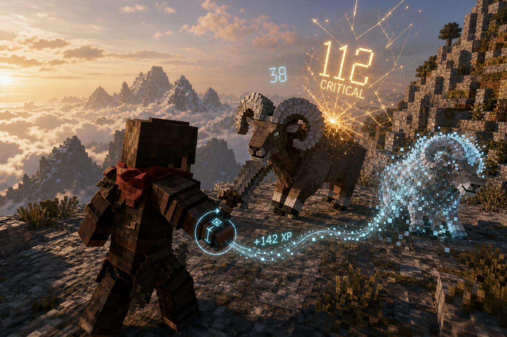
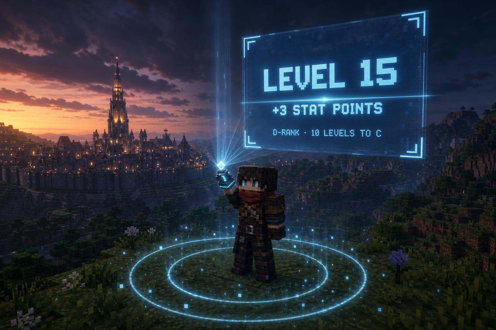
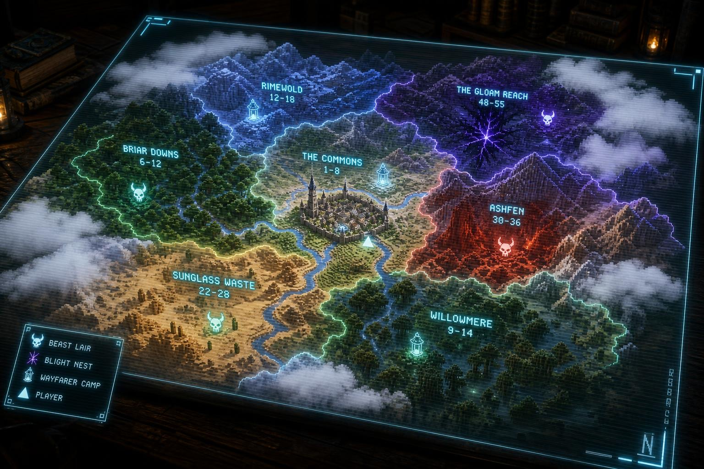
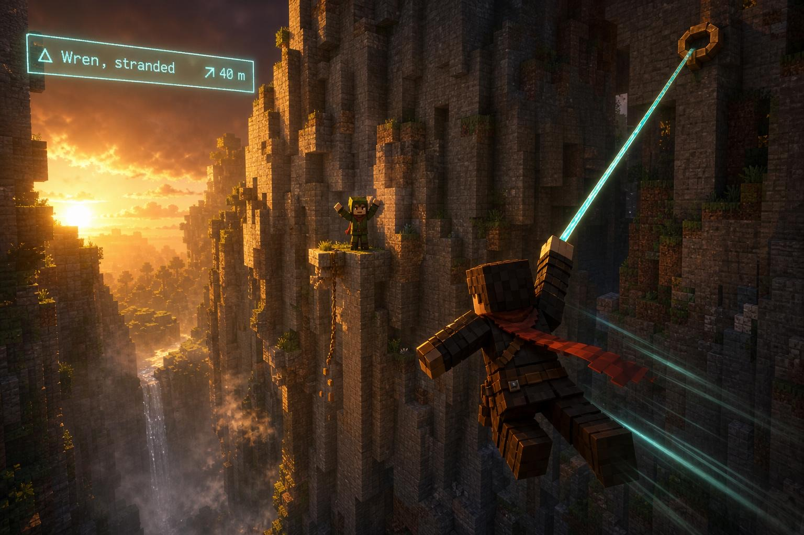
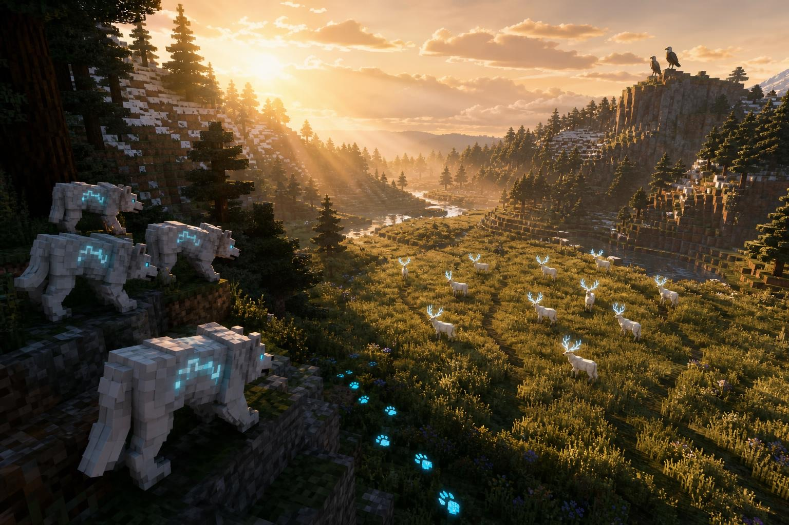
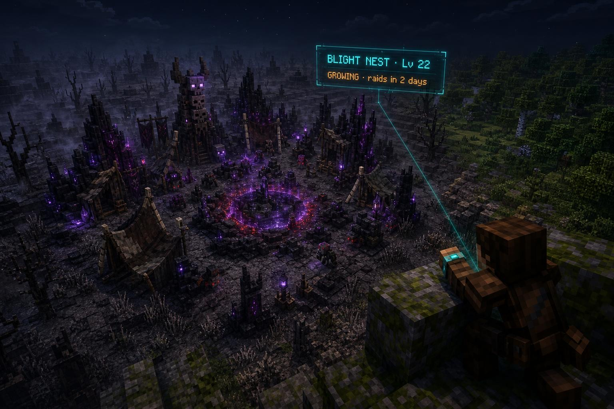
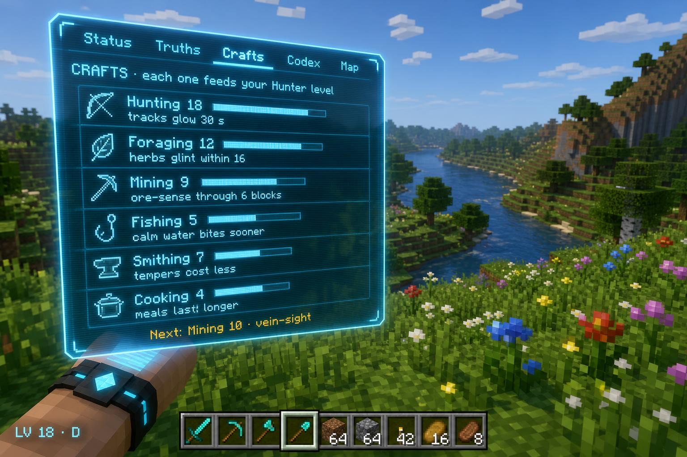

Everything you do outside the gates leads to something, and you see it. Your band reads the creatures you fight, XP streams into it, the land is a patchwork of named regions, each with its own danger, people out in the wilds need your rope and your wings, herds and packs live in their valleys, and six crafts level as you survive. Gates stay the big jumps. Survival stays the core.

Fifteen decisions, each with my recommendation. "Go with your recommendations" says yes to all of them.
Hostile kills, ores and building already give a hidden trickle, fauna has 44 creatures with named beasts and lairs, and the Wilds pay for discoveries. Four things keep it from reading as progression, and each phase answers one.


The band flares and the world dims a touch. Two rings of light spread across the ground from your feet, lifting square motes, and a faint column rises. A tall pane of Holo glass unfolds from the band with your new level and points typed in light, over a rising glass chord in the System's own voice. During a fight it waits: the band flares, a toast lands, and the full moment plays when the fight is over. Reassessments keep their own scene.
Everything is Awaken's own: our particles, our sounds from the audio pipeline, the Holo's glass. Nothing vanilla, nothing that reads as an add-on.
You said distance shouldn't be the only thing, because rings make the world linear and take away what Minecraft is: exploring for hours in any direction. So the overworld is a patchwork of named regions, each with its own level. Distance from Carillon only tilts the odds. A dangerous valley can sit a couple of kilometres from the wall, and a calm one can wait five kilometres out.

| Source | Today | The Living Wilds |
|---|---|---|
| Kills | Hostiles only: 4% of a level × min(2, hp/20); budget 0.15 per 10 min | Every creature, by its level: hunter 3%, neutral 1.5%, ambient or passive 0.45%, elite 12% of a level; budget 0.10 per 10 min; +8% per level above you (max +40%), tapering below |
| A sheep, a cow | Nothing | The ambient rate, plus Hunting craft XP |
| Ores · building | 1% per ore · 0.05% per block | Unchanged, plus Mining craft XP |
| Crafts | — | Foraging, Mining, Fishing 0.012 each; Cooking, Smithing 0.007 each, per 10 min |
| Wayfarer quests | — | 0.06–0.2 of a level a step, a chain's finale about 0.8, once per claim; plus the relic |
| Bounties | — | 0.15–0.3 of a level and essence (coin once Carillon's economy ships) |
| Camps and nests | — | 0.4 × floor 1 of the region's rank, once per camp per cycle |
| Gate floors | SPEC §2 shares | × 0.76; cores, hearts and gear unchanged |
| Player | Hours to 50 | Hours to 135 | XP from the wilds |
|---|---|---|---|
| Balanced | 41.8 → 36.6 | 82.1 → 79.1 | 1% → 17% |
| Careful | 49.4 → 38.3 | 100.3 → 86.7 | 2% → 23% |
| Gate-rusher | 46.4 → 44.7 | 84.8 → 87.9 | 1% → 8% |
| Builder | 41.6 → 35.6 | 84.8 → 81.1 | 2% → 19% |
| Wanderer (new: a gate every third trip, long stretches outside) | 32.4 | 79.7 | 38% |
Hunting, crafts, quests and camps count as "the wilds" here. 200 runs per player in the same model before and after, so the arrows are what changes; Phase B moves the model into
tools/sim/pacing_sim.py and retunes against its 95–105 h target. Through the mid-game an hour of focused hunting in a
region at your level pays about 0.55 levels (0.25 ten levels below you), an hour of mixed wilds play about 0.9, and three gate floors 0.65 at C to 2.0 at B.
The wilds can carry you; gates make you strong. First hour: level 3 at about 27 minutes, level 5 at about 54.

They tell the world's story beside Carillon's: the Choir and its bells, the Runners and Kestrel, the Association, the bell metal thread at C, the Precursors' three paths. Bright, funny and sincere, then suddenly brutal. Vael stays out: his beats belong to rank milestones.
| # | Chain | Who | Uses | What happens | Reward |
|---|---|---|---|---|---|
| LEVEL 1–8 · THE COMMONS | |||||
| 1 | The Last Delivery | Kestrel, the Roost | Runner moves | The word you never brought back from the square, and one last bag through the High Gate to the Wayfarer camp. The Roost lets you go. Shared with Carillon's thread. | Courier's Knot: tactical sprint recharges 25% faster |
| 2 | Ten Sheep Short | Hettie, shepherd | PER tracking, light | A sheep a night goes missing. Read the tracks to a Gloomstalker den, take it by day while they sleep, bring the old ram home. | Shepherd's Lantern: night hunters keep 8 blocks away |
| 3 | Moth Lights | Ilse, herbalist | Foraging, night travel | Follow Lumen Moths to where they circle buried ore, and gather what grows there. | Lumen Tonic recipe: night sight without the vignette |
| 4 | Oren's First Steel | Oren, the smith | Mining, Smithing | Ore from three places and a temper at his forge. He complains the whole way. | Oren's Mark: your next blade starts one temper up |
| LEVEL 8–20 | |||||
| 5 | Wren's Rope | Wren, a young Runner | The rope | Stranded on a cliff ledge after something cut her line. She was carrying a crate of bell bronze, now gone. | Wren's Hook: your rope reaches 6 further |
| 6 | The Caravan Road | Merchants' Guild | Powers, mounts | A caravan under attack at dusk; hold the wagons, then see it through the night to the oasis outpost. | Caravan Writ: Guild shops 15% cheaper; a Power Core Shard |
| 7 | The Hermit's Horn | Gus, hermit of the Crags | Climbing, a beast fight | He wants a Stonehorn shard from the lair up the cliffs. The horn he makes from it calls herds. | Herdcaller Horn: once a day, a herd stampedes along your aim |
| 8 | Pell's Message | Pell, a wounded Runner | The run, mounts | Legs broken, with word of a gate forming where none should. Bring Sun's salve from the city before dark, then carry his message. | Pell's Spurs: mount sprint +15%, whistle +80 blocks |
| 9 | The Drowned Bell | Ama Voss, Teodor's old student | Swimming, Scanner, the Veil | A Precursor bell under a lake: the Choir had outposts. Dive, scan, and find its resting place with spirit sight. | Voss's Lens: Scanner range ×2, hears sunken ruins |
| LEVEL 20–45 | |||||
| 10 | Bell Metal | The Association | The Veil, stealth | Wren's bronze is being melted by the Unbound, rogue Awakened who farm gate breaks and hate the bells. Scout in the Veil, then break the camp. Carillon's C-rank thread. | Title Bellward; Bellbronze blade recipe |
| 11 | The Weaver's Bargain | A tailor, and a spirit | The Veil, dreams | The tailor wants the Weaver Queen's silk; a spirit says she guards a Sleeper's dream-cocoon. Kill her, or bargain. | Choose: Silk Mantle (glide drag −20%) or Dreamthread |
| 12 | Stilts of the Mire | A stilt village | Wings and glide | The Mire Mother woke and the bog rose. Glide the children off the toppled huts, then calm her or fight her. | Mire Charm: no bog poison, no mud slowdown |
| 13 | The Keeper's Lantern | A Keeper's spirit | The Veil, cord puzzles | One of those who went Down asks you to carry a lantern of its memory to the Well. It exists only in spirit. | Title Lanternbearer; Veil time +20% |
| 14 | The Crossing | Herders | Mounts, Hunting | The great migration fords the river, the packs wait, and the Old Antler walks with the herd. | Antler Crown: herds and your mount never flee you |
| 15 | Sun's Bitter Cure | Sun, the healer | Foraging, Cooking | Wayfarers near a nest are blight-sick: three herbs from three regions and a meal only a cook can make. | Sun's Cure recipe; Healer renown |
| LEVEL 45 + | |||||
| 16 | The Relay Spires | Ama Voss | Tether, Wings, flight | Ascendant relays on five Tether Spires and a sky platform. Align them and the Halo answers once. | Relay Key: travel between spires you've climbed |
| 17 | Mother of Nests | The far camps | Everything you have | A nest from an ancient break, grown to tier 5. Three stages with Wayfarer allies. | Ashsteel recipe; title Blightbreaker |
| 18 | The Sleeping Village | Nobody awake | Dreams, manifest | Everyone sleeps here, the Sleepers' dream leaking out. Wake them one by one from inside their dreams. | Sleeper's Bell: ends a nightmare at once |
| 19 | Mira's Last Map | Mira, the scout | Exploration, flight | Light the beacons of five far landmarks for the map she can't finish herself. | Mira's Compass: names one unheard ruin a day |
| 20 | The Courier Who Never Came Back | Kestrel | Movement mastery | Her old partner vanished out there twenty years ago. His Runner marks still lead across the far regions, to what's left of him and the letter he carried. To her. | Last Mark: Flow drains 30% slower |



Six crafts, each to level 50, with perks at 5, 10, 20, 30, 40 and 50 that change how you play survival. They pay craft XP through the same fresh-and-worn budgets, so a farm left running levels off.
A new module, living (package dev.awaken.living): region, combat (+client), wayfarer, quest, bounty, event, population,
camp, craft. Commands under /awaken living, payloads living:*. New public API in SPEC §12: Regions
(levelAt, regionAt, creatureLevel, bandOf), Quests (active, tracked, advance for abilities other modules report), Crafts
(grant, level, has), and core.api.LivingHooks.
| Module | Change | Agreed with |
|---|---|---|
| progression | Kill XP by creature level and role, the new budget table, XP sources HUNT/CRAFT/QUEST, the gate trim, the first gate at level 4 | Orchestrator |
| world (fauna), mobs | Content level from Regions, elite variants, herd species leave natural spawns, beasts re-level at their lairs | Orchestrator |
| holo | A small public world-space glass API for plates; Journal and Crafts tabs through a tab hook | Pack session |
| compat (Jade) | Hide creature lines while plates show them | Orchestrator |
| wilds | Nothing inside it; the tracked quest is a Horizon source | Ascent session |
| Carillon | The gatehouse yard and Hale, Bram's line, bounties on the contracts board, the Atlas region layer, coin and renown through their hooks, TipHooks | Carillon session |
| anomalies | Wayfarer scenes share the outdoor rhythm; never both at once | Orchestrator |
| Phase | GameTest |
|---|---|
| B | living_region_map · living_kill_xp · living_plate_rules |
| C | living_quest_engine · living_bounty_board · living_scene_finder |
| D | living_population_ledger · living_camp_lifecycle |
| E | living_craft_xp |
| All | living_pure_survival, plus the pacing check in the sim |
Locally only -Ptests=living_; CI runs the full suite on every push to pack/living-wilds. One light screenshot tour per phase.
One builder at a time. B the combat layer, regions and XP → C Wayfarers, quests and bounties (the eight chains for levels 1–20, then the twelve) → D living creatures and camps → E crafts. Opus at extra-high effort for the look and the quest writing; Sonnet for data, spawn tables, tests and docs. Each phase goes to the orchestrator with its CI run.